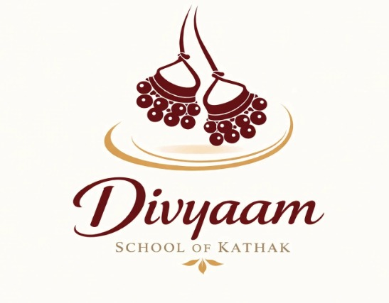

Divyaam Kathak Academy
Rhythm • Expression • Tradition
Discover the beauty of Kathak through rhythm, expression, discipline and creativity.
Children Classes
A welcoming environment where children can learn Kathak and develop confidence, discipline and creativity.
Adult Classes
Learn Kathak while connecting with Indian classical dance traditions.
Traditional Kathak
Learn Tatkar, Chakkars, Taal, Laya, Abhinaya and traditional compositions.
Performance Opportunities
Students can develop stage confidence through performance opportunities.
About Divyaam
Divyaam represents beauty, grace and a connection with something uplifting and meaningful.
At Divyaam, Kathak becomes a journey where students discover rhythm, expression, discipline and creativity.
Our Vision
Divyaam aims to create a welcoming space for children and adults to learn Kathak, build confidence and connect with the Indian classical dance tradition.
Why Divyaam Was Created
Divyaam was created to bring Kathak closer to learners of different ages and backgrounds while maintaining traditional foundations.
Tradition + Modern Learning
Maintaining the traditional foundation of Kathak while making learning approachable.
Discipline
Regular practice and dedication are an important part of learning Kathak.
Expression
Students learn to express emotions and stories through movement.
Creativity
Kathak encourages students to explore creativity through rhythm and expression.
Respect for Indian Classical Arts
Students develop appreciation for the heritage and traditions of Indian classical dance.
Divyaam initiative begins.
First group begins learning.
The learning journey continues through discipline, practice and expression.
Cultural performances.
Children and adult classes expand.
New performance and learning initiatives.
Guru Ananya Deshmukh
Kathak Guru & Artistic Director
Guru Ananya Deshmukh has training in Kathak, classical repertoire, rhythm and Abhinaya. She teaches both children and adults.
Achievements
- Cultural festivals
- Kathak workshops
- Stage performance guidance
- Classical dance programs
Children Classes
Specially designed learning environment for young students.
Beginner to Advanced
Students can progress according to their learning level.
Traditional Kathak
Training includes Tatkar, Chakkars, Taal, Laya, Abhinaya and compositions.
Adult Classes
Adults can learn Kathak regardless of previous dance experience.
Individual Attention
Students receive personal guidance during their learning journey.
Performance Opportunities
Students can develop confidence through stage and cultural performances.
At what age can children start Kathak?
Children can begin learning Kathak according to their age and readiness.
Do I need previous dance experience?
No. Beginners can start learning Kathak from the fundamentals.
How frequently are classes conducted?
Class frequency depends on the batch and learning schedule.
Are online learning options available?
Online learning options can be provided depending on the available batch.
Are examinations available?
Students can be guided for classical dance examinations when applicable.